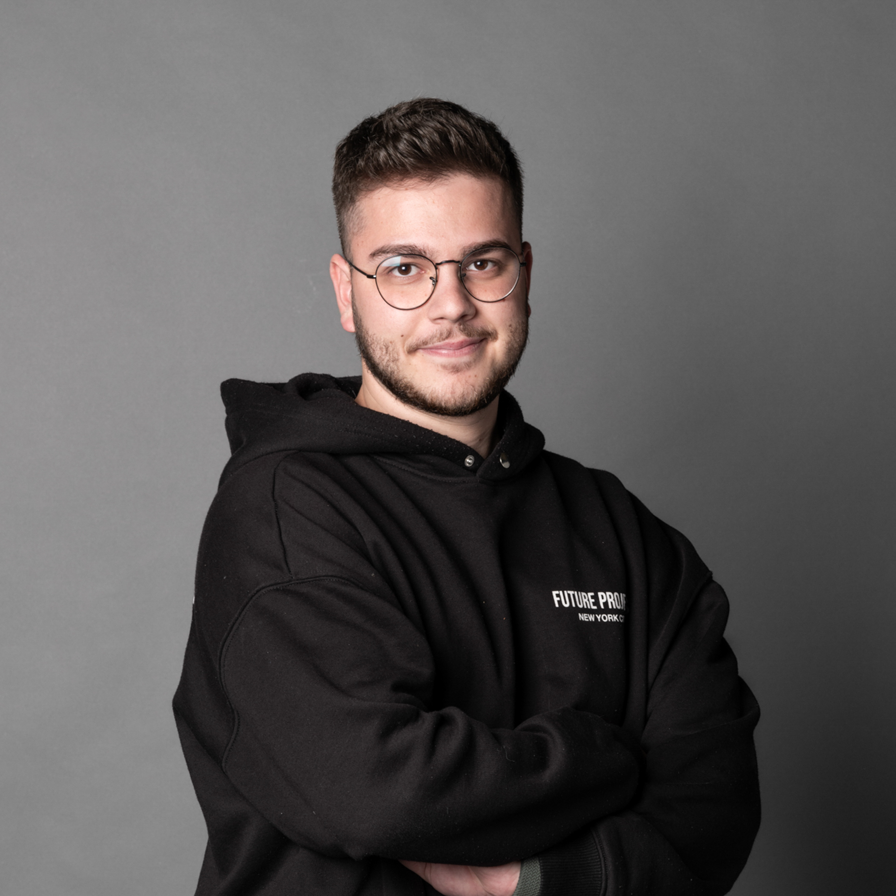

Master in Interaction Design
SUPSI DACD, Mendrisio
Profile CV

I am a reliable, responsible, independent and dynamic person. I have a strong interest in artistic activities and enjoy learning through research and experimentation. I easily adapt to new environments and work well in teams, bringing an open-minded, collaborative and proactive approach to every project.
Education
SUPSI DACD, Mendrisio
SUPSI DACD, Mendrisio
CSIA, Lugano
SPAI, Locarno
Experience
Sunday support staff at Migros Losone.
Web design and user research.
Photography and visual communication design projects.
Ice cream production workshop.
Gordola.
Software
Skills
Languages
Italian — native
English — B2
Contact
amacacciola@gmail.comInstagram ↗LinkedIn ↗